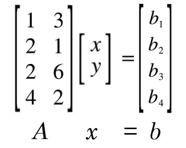
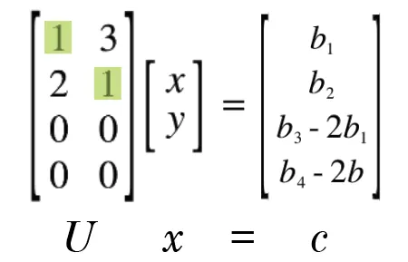
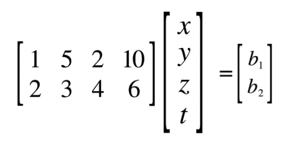
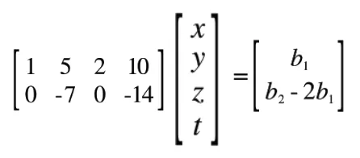
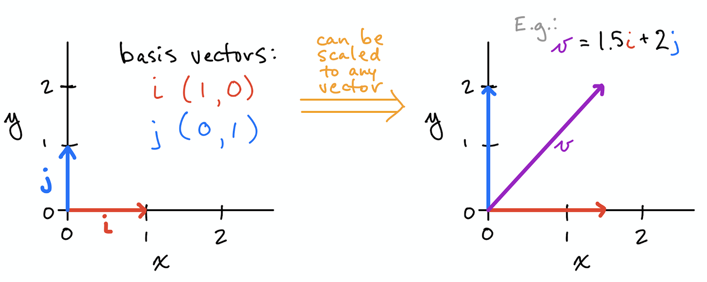

In full rank matrices, or r = m = n
- The matrix must be square
- There is one unique solution to every b.
- The reduced-row echelon form R is the identity I.
- There is nothing in the null space
- The matrix is invertible
In full column rank matrices, or r = n < m
- There is 1 or 0 solutions to every b
- The reduced-row echelon form R is the identity I on top of a zero matrix
- There is nothing in the null space
In full row rank matrices, or r = m < n
- There is an infinite amount of solutions to every b.
- The reduced-row echelon form R is the identity I to the left of a zero matrix.
- There is n-r special solutions in the null space.
Rank
The rank of the matrix represents the amount of independent columns in the matrix.
We then realize that the amount of pivot columns is the rank, since pivot columns = independent columns.
Furthermore, we can also get the amount of free columns in a (m, n) matrix by doing n - r, which gives us the amount of free columns.
So far:
- r is the amount of independent / pivot columns, as well as pivot variables
- n - r is the amount of dependent / free columns, as well as free variables
And in extension,
- n - r is the amount of vectors that define the null space
- r is the amount of vectors that define the column space
Full Rank; r = m = n
Obviously this is a square matrix and every columns is linearly independent.
They have no entries in their null space except for the zero vector {0}.
Full Column Rank; r = n, r < m
The difference is that you have dependent rows, or leftover rows. 
Thus, when we cancel out, we get the equivalent system .

Now can only be solved if the two solvability conditions are true. only if and can it be true.
But if those two conditions are true, we are left with a single answer to solve our system. That is why we say that with a r = n (full column rank) matrix, we either have 0 or 1 solutions. 0 if one or more of our solvability conditions is false, and 1 if all solvability conditions are true.
Full Row Rank; r = m, r < n
In this scenario, our matrix does have free variables and free columns, and thus has entries in the null space.  The second column is the first column x 2, and the fourth column is the second column x 2. Thus, when we cancel out, we can get the updated equation .  Since our answer will be two dimensional, and we have the basis vectors to describe two dimensional space in the first two columns of our matrix, we can solve any answer b.
But more importantly than that, we also have our ‘free columns’ of zeros. These multiply our ‘free variables’ of z and t. Thus, we can set z and t to any constants we like, since they will multiply by 0. From this, we can say that we have an infinite amount of solutions to any answer.
Basis
In mathematics, a set B of vectors in a vector space V is called a basis if every element of V may be written in a unique way as a finite linear combination of elements of B.
The smallest set of vectors that generates the space

Dimension
As a general rule, rank = dimension, or r = dimension.